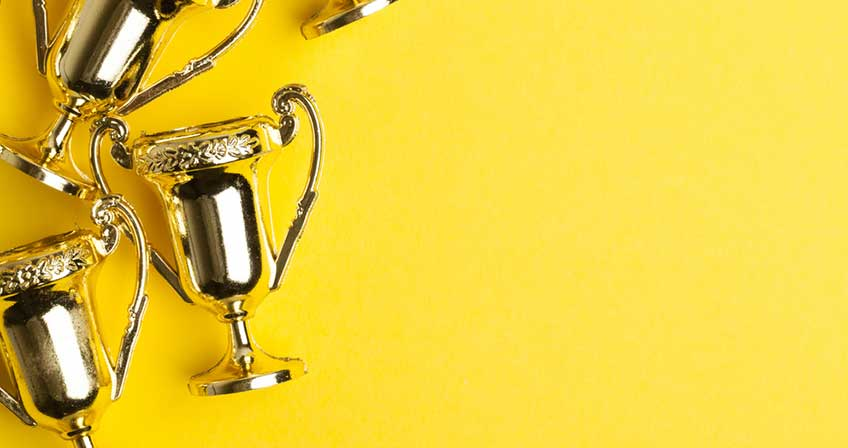

Achivements

-
Aklilu Lemma 1928-1989 EC (1935-1997) World recognized scientist and international civil servant was born on Meskerem 7, 1928 EC (September 18, 1935) in the town of Jijiga,
-
When Aklilu joined University College of Addis Ababa, later known as Haile Selassie University, he studied Science. In 1960 he earned his Master‘s degree from the University of Wisconsin, and then a DSc from Johns Hopkins. As a doctoral student, he was already interested in bilharzia, and he studied the defense mechanisms of starfish and sea urchins.
-
Back home, one day in 1964, the young scientist observed an everyday scene: women washing clothes in a stream. They were using a common shrub, Endod or soapberry, which women in some parts of Ethiopia have used for laundry for generations. What surprised Aklilu was the scene of dead snails—carriers of bilharzia.
-
In an acceptance speech in the Swedish Parliament at the 1989 Right Livelihood Award, which he won along with his colleague at the Institute of Pathobiology, Dr. Legesse Wolde Yohannes, Aklilu explained how the discovery was made in the northern Ethiopian town of Adwa. "I observed," he said,
-
"that in areas downstream from where people were washing clothes with the Ethiopian soapberry, commonly known as Endod, there were more dead snails floating around than anywhere else (including areas where people were washing with commercial soap). Observing this phenomenon repeatedly, I collected some live snails from upstream and asked one of the women to put a bit of the Endod suds from her washbasin into the snail container. Shortly after, the snails shrank, passed a few bubbles of gas, bled and died."
-
In 1966, after much testing in the laboratory, Professor Aklilu presented his finding to a science forum. For Africa, where the disease schistosomiasis is common, the discovery of a low-cost and biodegradable snail-killing agent (molluscicide) represented a major breakthrough.
-
Then Aklilu spent two years at Stanford University working on the chemical properties of Endod and its potential applications to snail fever and other parasitic diseases. When the analysis finally isolated the chemical component, it was named Lemmatoxin in his honor.
-
The research on Endod, however, had many ups and downs. His colleague Dr. Legesse noted,:
-
"..When Aklilu first made this scientific discovery,..many outside Ethiopia (such as) the English came forward with suggestions of collaboration. Aklilu had the belief that it did not matter where the science was developed, so a sample was given to the Tropical Plant Products Institute. For the following years, 1967-68, they did not report anything, while we were turning out many publications, including that it was not toxic. On his way to the States, he stopped by the Tropical Plant Products Institute and asked them how their research was going.They told him it was going so well that they had decided to patent it before publishing anything. (Aklilu) did not let his anger show but established a patent in the States and through the Ethiopian Ambassador to the UK stopped the others' claim. After that, they stopped praising Endod and started defaming it."
- The chemistry of Endod was studied at the Stanford Research Institute in California. Later, the International Development Research Center in Canada published a finding that Endod berries were, indeed, non-toxic to humans, thus confirming Aklilu‘s finding.
-
From 1993 until his death, Dr. Aklilu, while at Johns Hopkins University, was involved in promoting indigenous capacity building in scientific research in areas of HIV/AIDS control in his home country and Uganda by establishing links between Johns Hopkins and their flagship universities
-
Dr. Aklilu has three patents, five books and 60 scientific papers to his name. He has won many awards including the Haile Sellassie I Gold Medal and the 1989 Right Livelihood Award, considered an alternate to the Nobel Prize